Oscillations - The Tranditional Way¶
Evidence of Oscillations¶
A lot of experiments have been done to research on neutrino oscillations. In summary there are three types,
- Solar neutrinos,
- Reactor and accelerator neutrinos,
- Atmospheric neutrinos.
Results of Experiments¶
Difference between masses from data
We also have
By some convention, people would use numbers so that 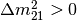 or 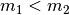.
Vacuum Theory¶
Neutrinos evolve in mass eigenstates. So we need to describe flavour states 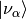 using mass eigenstates 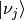.
where 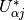 is the element of neutrino mixing matrix.
PMNS Mixing Matrix
Pontecorvo-Maki-Nakagawa-Sakata (PMNS) mixing matrix is the product of three rotation matrices, in addition to an extra phase, [1]

The  is the CP violation phase.
is the CP violation phase.
The origin of the phase is from the fact that we need 4 degrees of freedom for this mixing matrix while a convinient way is to write down the SO(3) rotation matrix then put this extra phase here.
More About Phase of Nutrinos
The mixing of mass eigenstates is
Since the phase of neutrinos can be redefined, we have 3 phases for each flavour and a global phase being arbitary. The first matrix on the RHS can be eliminated. The third matrix on the RHS is not important for neutrino oscillations so it can be neglected. (Proof required)
In ultra relativistic case, we can simply find out the time evolution, which is equivalent to distance evolution,
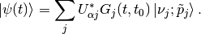
The survival probability means how much neutrinos of a flavour left after some time or distance, which is calculated by
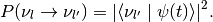
We can see clearly that the survival probability depends on some parameters.
Two Flavour Oscillation¶
To write down this clearly, we need to write down the mixing matrix and propagator. For simplicity, we calculate the example of two flavour (a, b) oscillation.
It’s easier to write down the propagation in mass eiginstates so the first thing to work out is the mixing matrix.
Suppose we have only a flavour neutrino initially,
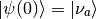
Mixing Matrix¶
The mixing matrix is an rotation of eigenbasis.

Two flavour neutrino mixing diagram with being the mixing angle
The flavour states can be expressed in terms of mass eigenstates,
where the matrix
is the mixing matrix which is a rotation of basis geometrically. In other words, this matrix is the representation of the rotation 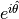.
Survival Probability¶
With the mixing matrix, the propagation of an initial state of only flavour a is
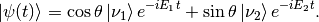
To find out the amplitude of flavour a, we need to project the state 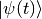 onto a flavour eigenstate, say, 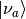,
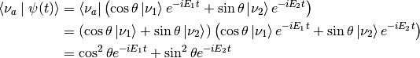
The survival probability is the amplitude squared,
![P_{aa} & = \lvert \braket{\nu_a}{\psi(t)} \rvert ^2 \\
& = \lvert \cos^2\theta e^{-iE_1t} + \sin^2\theta e^{-i E_2 t} \rvert^2 \\
& = \left( \cos^2\theta e^{-iE_1t} + \sin^2\theta e^{-i E_2 t} \right)^* \left( \cos^2\theta e^{-iE_1t} + \sin^2\theta e^{-i E_2 t} \right) \\
& = \cos^4\theta + \sin^4\theta + \cos^2\theta\sin^2\theta e^{i(E_1-E_2)t}+ \sin^2\theta\cos^2\theta e^{-i(E_1-E_2)t} \\
& = \cos^4\theta + \sin^4\theta + \cos^2\theta\sin^2\theta e^{i\Delta E t}+ \sin^2\theta\cos^2\theta e^{-i\Delta E t} \\
& = \cos^4\theta + \sin^4\theta + 2 \cos^2\theta\sin^2\theta \cos(\Delta E t) \\
& = (\cos^2\theta +\sin^2\theta)^2 - 2\cos^2\theta \sin^2\theta + 2 \cos^2\theta\sin^2\theta \cos(\Delta E t) \\
& = 1 - 2 \cos^2\theta \sin^2\theta (1 - \cos(\Delta E t)) \\
& = 1 - \sin^2(2\theta) \sin^2\left( \frac{\Delta E t}{2} \right)](_images/math/b1723472ca691421d0116f97d1d1c1fe00590d07.png)
with the definition . We usually calculate the case 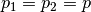 , which takes us to
with . Most of the time we would like to know the oscillation with respect to distance. Using the approximation 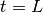 and , we have
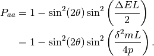
This is the survival probability of flavour a neutrino with an initial state of flavour a.
There are several things to be noticed,
- 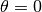 leads to oscillation free neutrinos.
- or (in the case of same momentum) also gives us no oscillation.
- At 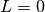 the survival probability is 1, which means no oscillation is done.
Hamiltonian¶
It’s easy to write down the Hamiltonian for the mass state stationary Schrödinger equation. As we have proven, to first order approximation,
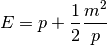

However, the Hamiltonian we prefer is the one for flavour eigenstates. To achieve this, we only need to rotate this previous Hamiltonian using the mixing matrix 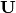.
![\mathbf H_{\alpha} & = \mathbf U \hat H_j \mathbf U^T \\
& = \begin{pmatrix} \cos\theta & \sin\theta \\ -\sin\theta & \cos\theta \end{pmatrix} \left( p \mathbf I + \frac{1}{2p}\begin{pmatrix} m_1^2 & 0 \\ 0 & m_2^2 \end{pmatrix} \right) \begin{pmatrix} \cos\theta & -\sin\theta \\ \sin\theta & \cos\theta \end{pmatrix} \\
& = p \mathbf I + \frac{1}{2p} \begin{pmatrix} \cos^2\theta m_1^2 + \sin^2\theta m_2^2 & -\sin\theta\cos\theta m_1^2 + \sin\theta\cos\theta m_2^2 \\ -\sin\theta\cos\theta m_1^2 + \sin\theta\cos\theta m_2^2 & \sin^2\theta m_1^2 + \cos^2\theta m_2^2 \end{pmatrix} \\
& = p \mathbf I + \frac{1}{2p} \begin{pmatrix} m_1^2 - \delta^2 m \sin^2\theta & -\frac{1}{2}\sin 2\theta \delta^2m \\ -\frac{1}{2}\sin 2\theta \delta^2m & m_2^2+\delta^2m\sin^2\theta \end{pmatrix} \\
& = p \mathbf I + \frac{1}{2p} \left( \frac{1}{2}(m_1^2+m_2^2) \mathbf I - \frac{1}{2}\begin{pmatrix} -\delta^2m\cos 2\theta & \delta^2 m \sin 2\theta \\ \delta^2m\sin 2\theta & \delta^2 m\cos 2\theta \end{pmatrix} \right) \\
& = \left(p + \frac{m_1^2+m_2^2}{4p} \right)\mathbf I - \frac{1}{4p}\begin{pmatrix} -\delta^2m\cos 2\theta & \delta^2 m \sin 2\theta \\ \delta^2m\sin 2\theta & \delta^2 m\cos 2\theta \end{pmatrix}](_images/math/db5393a73fc87c9eac52c2eb0e5b926e2cfa34f4.png)
Again we see clearly, no oscillation will apear as long as mixing angle or .
Note
The reason we can do this is that this mixing matrix is time and space independent. To see this, we first write down the Schrödinger equation for mass eigenstates,
Applying the mixing matrix,
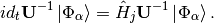
Notice that the mixing matrix, which is a rotation, is orthonormal, 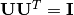. Then we have inverse of this matrix is the same as the transpose.
Multiply on both sides and remember the fact that the mixing matrix is orthonormal, we have
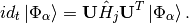
Now we can define the Hamiltonian for flavour states,
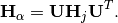
Since Pauli matrices plus identity forms a complete basis for all 2 by 2 matrices, it our Hamiltonian can be written as
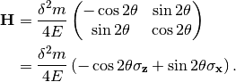
Note
Pauli matrices are
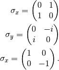
In a more compact way,
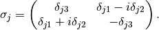
Equation of Motion in Matter¶
Hamiltonian¶
We have already derived the Hamiltonian for vacuum oscillatioin,
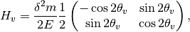
where we would like to define a new matrix,
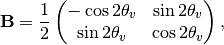
so that the vacuum Hamiltonian can be written as
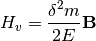
The effect of matter, as we have already discussed before, adds an extra term
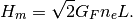
Here we have
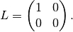
Note
Previously in the MSW effect section, we have 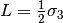. The reason, as explained there, is that we can always write down a 2 by 2 matrix using Pauli matrices and indentity matrix and identity matrix only shifts the overall eigenvalue not the eigenvector so we can just drop the identity term.
One other term is the self-interaction of neutrinos, i.e., neutral-current neutrino-neutrino forward exchange scattering,
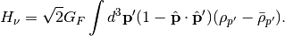
The overall Hamiltonian is
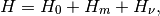
where the vacuum Hamiltonian is
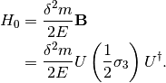
Equation of Motion¶
From the Hamiltonian, Von Neumann equation is
![i \frac{\partial}{\partial t}\rho = \left[ H , \rho\right]](_images/math/75c3032071d3cafdd045b027cdda019d75297bbb.png)
In Picture chapter we have seen the definition of a polarization matrix. The components of a polarization vector (for neutrinos) is given by
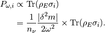
For anitneutrinos, we have a negative  which is defined as 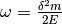 (neutrinos) and 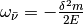 (anitneutrinos). The polarization is defined as
which is defined as 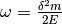 (neutrinos) and 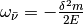 (anitneutrinos). The polarization is defined as
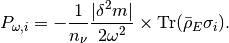
With all these definitions, Von Neumann equation multiply by 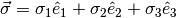, we have
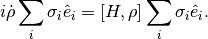
Notice that Pauli matrices are Hermitian and Unitary, we can alway insert the identity 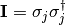.
Commutator and Cross Product
Commutator of two vectors,
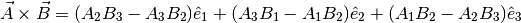
Trace of Pauli Matrices
All Pauli matrices have vanishing trace. And what makes our calculation more convinient is that the trace of matrices is invariant under cyclic permutation, that is
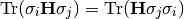
Notice that to have a non-vanishing trace we need . This property really saves our life.
As the definition, we have

Using these we can rewrite the commutator
Multiply by and take the trace, we get,
The corresponding LHS after these work becomes
The Von Neuman equation becomes
We know explicitly what polarization vector is
for neutrinos while
The vectorized Hamiltonian is
Multiply by and take the trace,
that is,
Hamiltonian
The Hamiltonian for homogeneous isotropic environment is
Then the equation we need becomes
where , , .
MSW Effect¶
Physics of MSW
As neutrinos passing by matter, the effective mass coming from energy change becomes important thus changing it’s eigenstates and propagation.
Neutrinos do interact with matter, mostly electrons in most cases.

\begin{fmfgraph*}(200,180)
\fmfleft{i1,i2}
\fmfright{o1,o2}
\fmf{fermion}{i1,v1,o1}
\fmf{fermion}{i2,v2,o2}
\fmf{photon}{v1,v2}
\fmflabel{$v_e$}{i2}
\fmflabel{$e^-$}{i1}
\fmflabel{$v_e$}{o2}
\fmflabel{$e^-$}{o1}
\fmf{photon,label=$Z$}{v1,v2}
\end{fmfgraph*}

\begin{fmfgraph*}(200,180)
\fmfleft{i1,i2}
\fmfright{o1,o2}
\fmf{fermion}{i1,v1,o1}
\fmf{fermion}{i2,v2,o2}
\fmf{photon}{v1,v2}
\fmflabel{$v_\tau$}{i2}
\fmflabel{$e^-$}{i1}
\fmflabel{$v_\tau$}{o2}
\fmflabel{$e^-$}{o1}
\fmf{photon,label=$Z$}{v1,v2}
\end{fmfgraph*}

\begin{fmfgraph*}(200,180)
\fmfleft{i1,i2}
\fmfright{o1,o2}
\fmf{fermion}{i1,v1,o1}
\fmf{fermion}{i2,v2,o2}
\fmf{photon}{v1,v2}
\fmflabel{$v_e$}{i2}
\fmflabel{$e^-$}{i1}
\fmflabel{$v_e$}{o1}
\fmflabel{$e^-$}{o2}
\fmf{photon,label=$W^{-}$}{v1,v2}
\end{fmfgraph*}
The one that is missing is the charged current for and interaction because of lepton number conservation.
The first two diagrams will add two equal terms on the diagonal terms of Hamiltonian, which can be viewed as adding a number times identity matrix thus conserves the eigenstates while shifts the eigenvalues. However, the third diagram will only add a term to the first diagonal term of Hamiltonian, which is the weak coupling with being the number density of electrons.
Weak Interaction
We can guess this interaction term using physics picture. This interaction should be proportional to density of electrons with a coupling constant . Then check the dimensions.
So the dimension is right. The missing constant is .
This symmetry breaking will change the evolution and makes the states more electron neutrino.
This is the reason of MSW effect.
The MSW effect itself can be made clear using the example of neutrino oscillations in our sun.
Small Mixing Angle
Take two flavour mixing as an example.
In the small mixing angle limit,
which is very close to an identity matrix. This implies that electron neutrino is more like mass eigenstate . By we mean the state with energy in vacuum.
We need this intuitive picture to understand MSW effect. Electron neutrinos are almost identical to the low mass neutrino mass eigenstate. However, as we will see, due to the matter interaction, the electron flavour neutrino is corresponding to the HEAVY mass eigenstate. This is the key idea in physics of MSW effect.
The Hamiltonian for neutinos with neutrino-matter interaction (in flavour basis) is
where the last term (green part) can be neglected because this term will only shift all the eigenvalues with the same amount without changing the eigenvectors.
Note
As a reminder, .
Note
The red part is from the charged current Feynman diagram. We have a matrix instead of an matrix like
because we rewrite this matrix with Pauli matrices and identy. Then the identities are neglected.
This can be done properly because Pauli matrice and Identy matrix form a complete basis.
In a more compact form, this Hamiltonian is
Note
Eigenvalues of are 1 and -1 with corresponding eigenvectors
and
As we have mentioned, this Hamiltonian is in flavour basis. When mixing angle , the eigenvectors are almost eigenvectors of which are electron neutrinos and x type neutrinos.
Interesting Limits
Before we really solve the equation of motion, some interesting limits can be shown here.
Interaction is much larger than cacuum mixing terms. In this case, the Hamiltonian becomes diagonalized and the neutrinos will stay on it’s flavour eigenstates in the propagation.
Interaction is much smaller than vacuum mixing terms. The propagation reduces to vacuum case.
To see this effect quantitively, we need to diagonalize this Hamiltonian (Can we actually diagonalize the equation of motion? NO!). Equivalently, we can rewrite it in the basis of mass eigenstates ,
This new rotation in matrix form is
Diagonalize Hamiltonian
To diagonilize it, we need to multiply on both sides the rotation matrix and its inverse,
The second step is to set the off diagonal elements to zero. By solving the equaions we can find the and .
where
Set the off-diagonal elements to zero,
So the solutions are
This diagonalize the Hamiltonian LOCALLY. It’s not possible to diagonalize the Hamiltonian globally if the electron number density is not a constant.
The point is, for equation of motion, we have a differential with respect to position  ! So even we diagonalize the Hamiltonian, the equation of motion won’t be diagonalized. An extra matrix will occur on the LHS and de-diagonalize the Hamiltonian on RHS.
! So even we diagonalize the Hamiltonian, the equation of motion won’t be diagonalized. An extra matrix will occur on the LHS and de-diagonalize the Hamiltonian on RHS.
Note
As  , and vanishes. Thus the neutrino will stay on flavour eigenstates.
, and vanishes. Thus the neutrino will stay on flavour eigenstates.
With the newly defined heavy-light mass eigenstates, we can calculate the propagatioin of neutrinos,
We imediately know the propagation is on the heavy-light mass eigenstates under adiabatic condition WITHOUT solving the equation. The eigenvalue of these states are and . The absolute value of these solutions grow as becomes large.
Is Adabatic Condition Valid Here?
Haxton’s paper.
From the two solutions we know there is a gap between the two trajectories. We draw a figure with electron number density as the horizontal axis and energy as the vertical axis.

Neutrino physics by Wick C. Haxton and Barry R. Holstein.
Q&A¶
Question
What are some of the conventions used in liturature?
Answer
- .
- Flavours of left hand neutrinos are mixing of mass eigen states, .
Question
Why can we use just quantum mechanics on relativistic neutrinos? In principle one should use quantum field theory or at least relativistic quantum mechanics?
Answer
To be answered.
Question
What does the mixing angle mean exactly both in vacuum and matter environment?
Answer
There are several ways to illustrate this.
- Rotation angle in flavour space. For simplicity I use a two component neutrino model.
This is a rotation in a plane with a generator . (Make a figure for this.) + (Write down the 3 components model.)
- Oscillation probability involves this angle too. It is a suppression of the oscillation probability.
- From the view of quantum states, this angle determines how the flavour states are composed with mass eigenstates, i.e., the fraction or probability of each mass eiginstates in a flavour state.
Question
What does wave packet in neutrino oscillation mean?
Answer
To Be Answered.
Question
How would a wave packet spread?
Answer
A Gaussian wave packet would spread or shrink. The key of this spreading or shrinking is the dispersion relation.
For non-relativistic Gaussian wave packet in momentum basis with dispersion relation , the expansion of packet is
Obviously, the RMS width spreads according to group velocity .
However, the situation could be different for a relativistic neutrino.
Question
What will scattering do to a wave packet.
Answer
Momentum transfer for a plan wave case in Born approximation is
Refs & Notes¶
| [1] | (1, 2, 3) Neutrino tomography by Margaret A. Millhouse & David C. Latimer, American Journal of Physics 81, 646 (2013); doi: 10.1119/1.4817314 . |